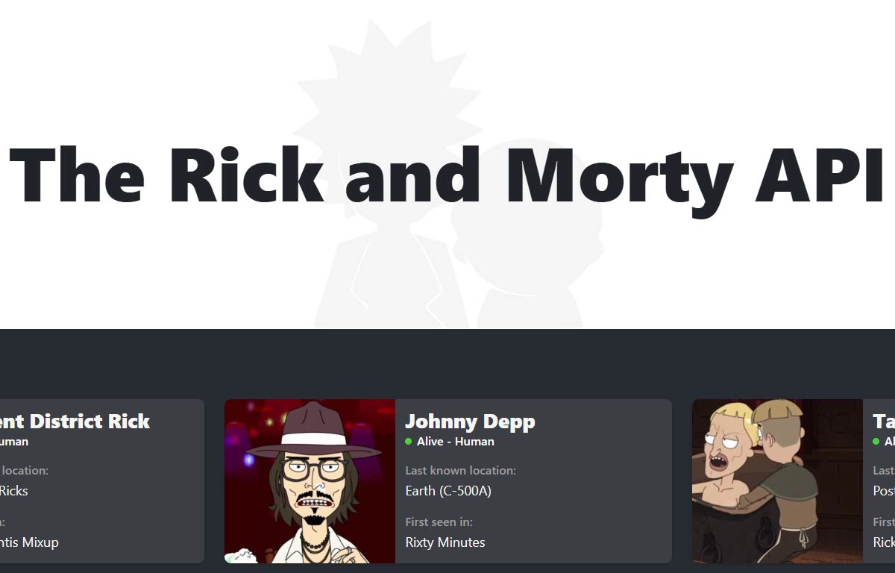
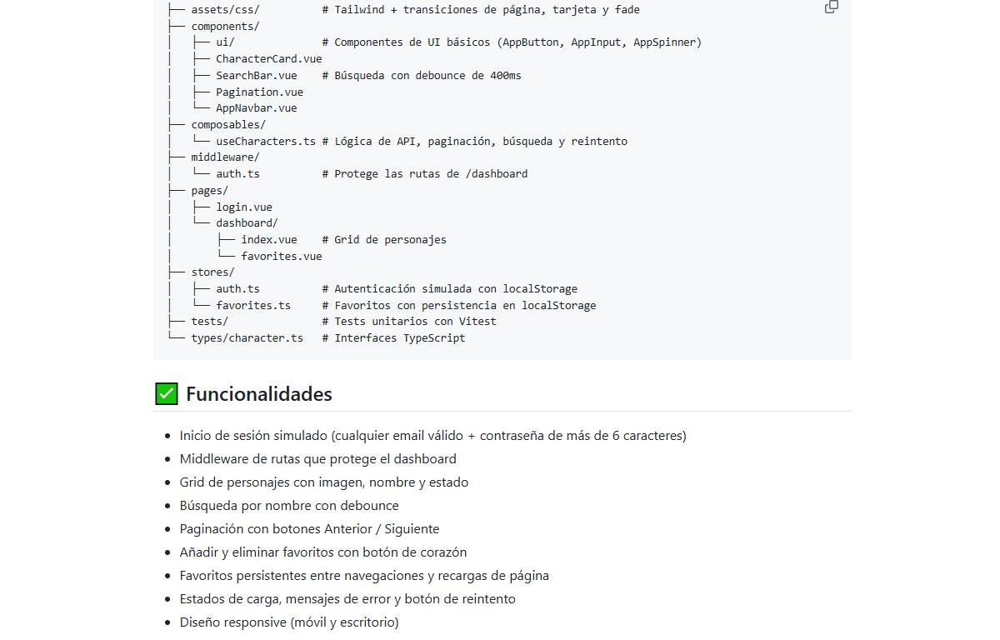

Proyecto personal de experimentación con Vue.js, Nuxt y Pinia: un dashboard interactivo que consume la API pública de Rick and Morty para explorar, filtrar y guardar personajes del universo de la serie
Este proyecto nace como un ejercicio personal de experimentación y aprendizaje con tecnologías del ecosistema Vue.js. Quería salir de mi zona de confort y explorar de primera mano frameworks y herramientas que se utilizan ampliamente en el desarrollo frontend profesional. La API pública de Rick and Morty fue el pretexto perfecto: un conjunto de datos rico, bien documentado y lo suficientemente divertido como para mantener la motivación durante todo el desarrollo.
Mis conocimientos de desarrollo frontend se centraban en JavaScript vanilla, HTML y CSS. Aunque esta base me ha permitido construir proyectos funcionales como visualizaciones de datos y aplicaciones web, quería dar el salto a frameworks modernos como Vue.js para entender cómo se estructura una aplicación frontend real: gestión de estado, componentes reactivos, rutas, middleware de autenticación y consumo de APIs REST. La mejor forma de aprender una tecnología es construir algo con ella.
Construir una aplicación web completa con Vue.js, Nuxt y Pinia que incluyera funcionalidades reales de un producto digital: autenticación de usuarios, navegación entre vistas, consumo de una API externa, sistema de filtrado y búsqueda, gestión de favoritos y diseño responsive. Todo ello desplegado en producción para poder compartirlo y demostrar que funciona en un entorno real.
El proyecto está pensado como pieza de portfolio y ejercicio de aprendizaje. Es una demostración funcional de capacidades técnicas con frameworks modernos, orientada a mostrar que puedo trabajar con las herramientas que se utilizan en equipos de desarrollo frontend actuales.
Antes de escribir una sola línea de código, dediqué tiempo a estudiar la documentación oficial de Vue.js, Nuxt y Pinia para comprender la filosofía de cada herramienta y cómo encajan entre sí. Analicé la API pública de Rick and Morty para entender sus endpoints, la estructura de respuestas paginadas y las opciones de filtrado disponibles (por nombre, estado, especie y género). También investigué patrones habituales de dashboards y aplicaciones de consulta de datos para definir una interfaz clara y funcional.
La interfaz se diseñó con una estética dark que encaja con la temática de la serie, utilizando Tailwind CSS para mantener un desarrollo ágil y consistente. Se implementó un sistema de tarjetas para mostrar los personajes con su imagen, nombre, estado (vivo, muerto, desconocido) y última ubicación conocida. La navegación se dividió en dos vistas principales: el catálogo general de personajes con búsqueda y filtros, y una sección de favoritos donde el usuario puede guardar sus personajes preferidos. Se añadió un sistema de autenticación simulado para practicar la gestión de rutas protegidas y middleware en Nuxt.
El principal desafío fue aprender y aplicar simultáneamente tres tecnologías nuevas (Vue.js, Nuxt y Pinia) sin experiencia previa con ninguna de ellas. Gestionar el estado global de la aplicación con Pinia, especialmente para mantener la lista de favoritos sincronizada entre vistas, requirió entender en profundidad el patrón de stores reactivos. Implementar la paginación infinita del catálogo de personajes consumiendo la API de forma eficiente, sin sobrecargar las peticiones, fue otro reto significativo. Configurar el middleware de autenticación para proteger rutas y el despliegue en Vercel completaron el aprendizaje de un flujo de trabajo frontend profesional de principio a fin.
Framework progresivo de JavaScript para construir interfaces de usuario, potenciado con Nuxt para gestionar el enrutamiento, el renderizado y la estructura del proyecto de forma organizada y escalable.
Gestor de estado oficial de Vue.js, utilizado para centralizar los datos de la aplicación: personajes cargados desde la API, filtros activos, lista de favoritos y estado de autenticación del usuario.
Framework de utilidades CSS que permitió construir una interfaz responsive y visualmente consistente de forma rápida, con una estética dark adaptada a la temática de la serie.
API REST pública y gratuita con datos de más de 800 personajes. Se consume para obtener información paginada, aplicar filtros por nombre, estado y especie, y mostrar los detalles de cada personaje.